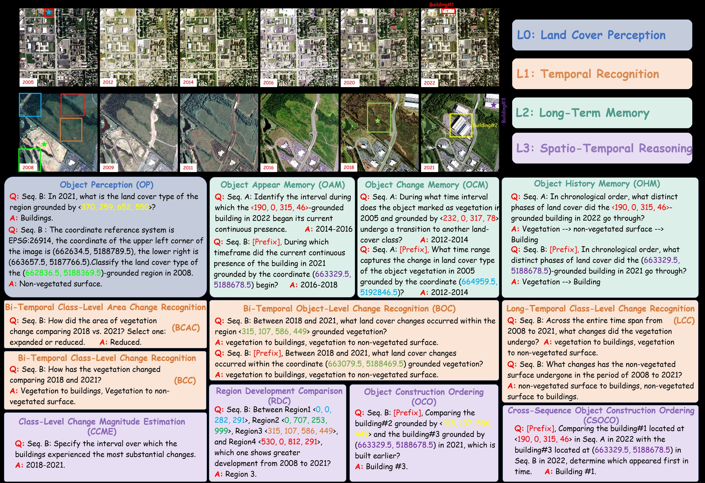
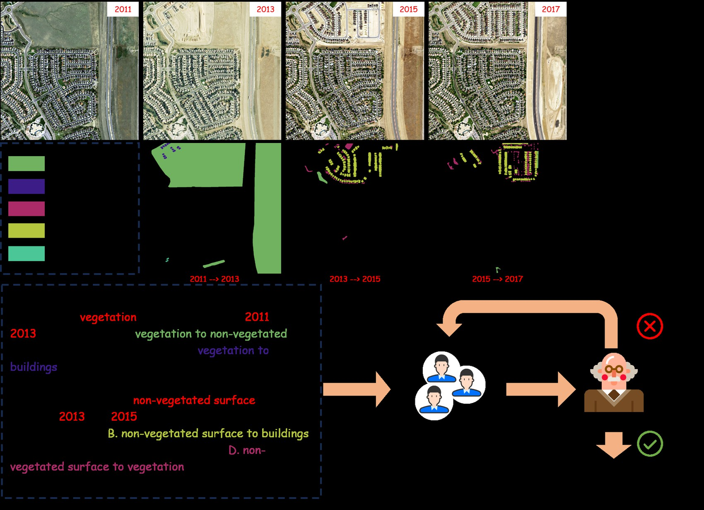
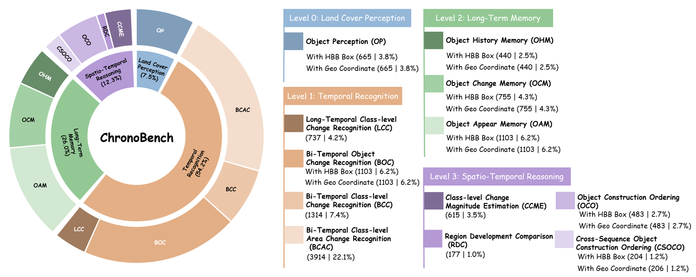
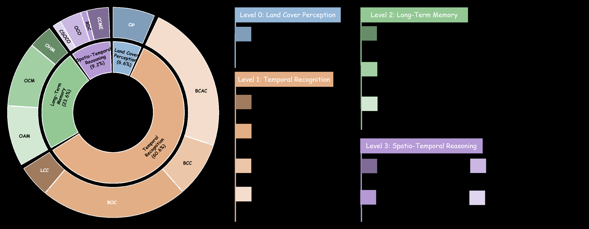
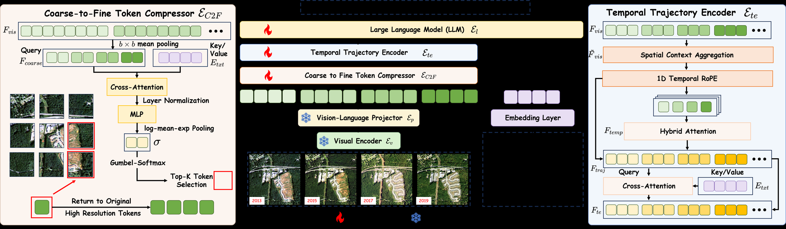
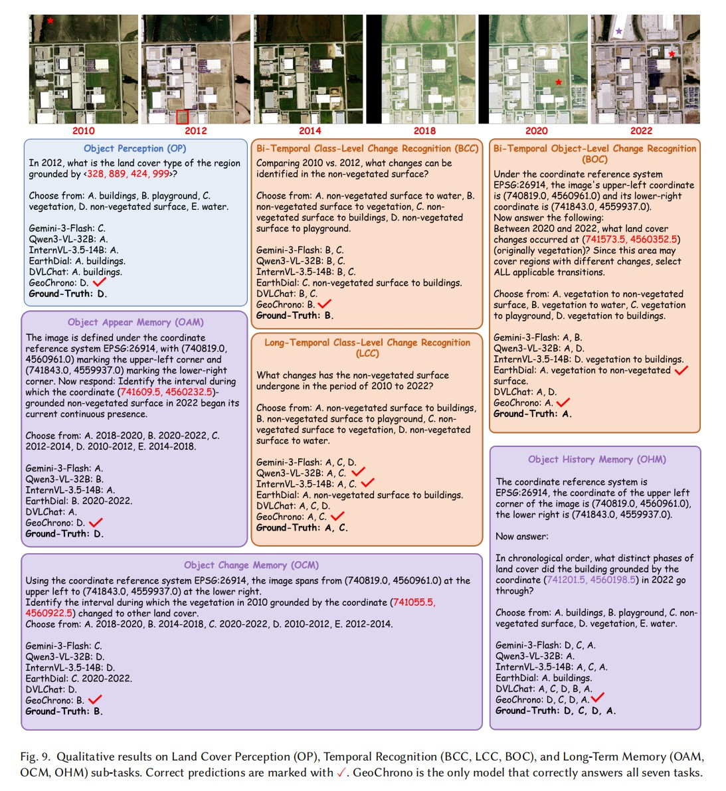
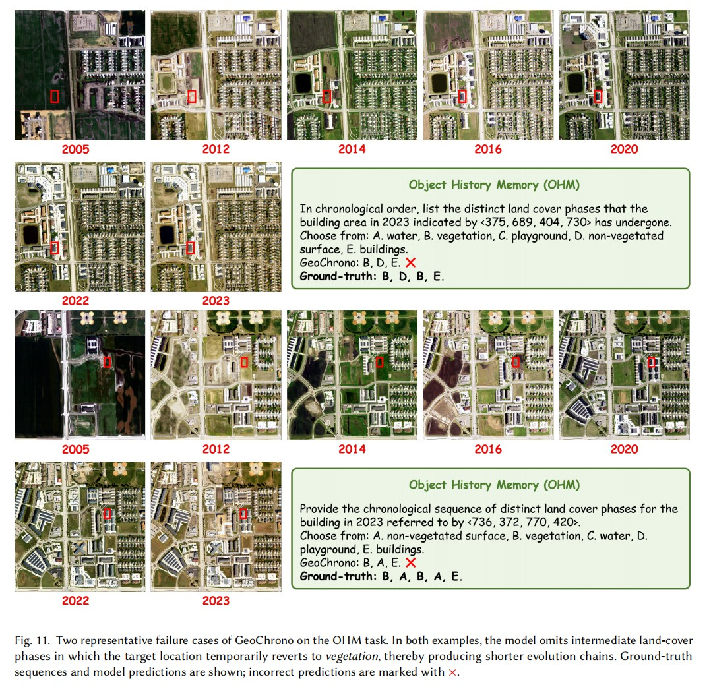

The Earth evolves along space and time, yet most remote sensing interpretation methods see only static snapshots or bi-temporal pairs. Understanding the continuous, long-term trajectory of landscape transformation demands more: a model must perceive land cover, recognize changes, memorize evolution histories, and reason across time and space. Prior benchmarks organized around application scenarios have shown that MLLMs struggle with long-term remote sensing, but not which underlying competency fails. ChronoBench is built to answer exactly that: inspired by human cognition, it isolates these competencies as four progressive levels, each framed by a core question, so that a failure at any level points to a specific missing capability:
Each level withholds one more piece of information from the model. The pivotal step is from Level 1 to Level 2: in Level 1 the time points are given as inputs, whereas Level 2 requires the model to recall temporal information as outputs — the watershed between perceiving change and remembering history.
Remote sensing offers an unparalleled vantage point for observing the Earth's long-term surface evolution, yet it demands that a model not only perceive land cover at isolated moments, but also track changes, memorize evolution histories, and reason across time and space. However, existing studies lack a systematic evaluation that dissects these distinct competencies. To fill this gap, we introduce ChronoBench, a multidimensional benchmark that decomposes this task into four progressive cognitive levels (i.e., Land Cover Perception, Temporal Recognition, Long-Term Memory, and Spatio-Temporal Reasoning). ChronoBench comprises 12 sub-tasks and 17,689 rigorously validated QA pairs. Extensive evaluations reveal that mainstream MLLMs fall drastically behind human experts, with Long-Term Memory emerging as the most critical bottleneck. Motivated by this finding, we further propose GeoChrono, an MLLM with enhanced capabilities for tracing, memorizing, and reasoning about long-term geographic evolution. Leveraging the physical prior that geographic parcels remain spatially fixed while their semantics evolve, we design a Temporal Trajectory Encoder (TempEnc) that constructs per-location temporal trajectories for dedicated land cover evolution modeling, and we introduce a Coarse-to-Fine Token Compressor (C2FComp) that adaptively preserves dynamic regions while compressing the static background. To support training, we also construct ChronoInstruct, a 104K-sample instruction-tuning dataset spanning all competency levels. GeoChrono achieves state-of-the-art performance on ChronoBench, surpassing the leading commercial MLLMs by over 20%, while C2FComp reduces visual tokens by over 56% while retaining 94.6% of GeoChrono's performance.
Identify the land cover at a specified location and timestamp, grounded by an HBB box or geographic coordinates.

All QA pairs are generated by deterministic rule-based programs that traverse pre-existing, human-annotated semantic change masks — no model-generated labels in the loop — followed by a two-stage human quality-control process with independent annotators and a domain-expert supervisor. The same pipeline scales up to ChronoInstruct, a 104,949-sample instruction-tuning dataset with multiple-choice, short-text, and free-form natural-language answers.



A substantial human–machine gap. Human experts confirm the tasks are unambiguous and solvable, yet the best commercial model (Gemini-3-Flash) trails them by ~35 points; open-source models peak at 46.73%.
Long-Term Memory is the critical bottleneck. On reconstructing complete evolution histories, open-source models nearly collapse (0.45–4.55%) and RS domain models stay below 2.5%, despite being trained on temporal RS data.
Parameter scaling is inconsistent. Growing InternVL-3.5 from 4B to 14B barely moves memory and reasoning scores; brute-force scaling does not bridge the gap to human cognition.
Temporal remote sensing sequences differ fundamentally from natural video: geographic parcels remain spatially fixed while their semantics evolve, and only a small fraction of a wide-area scene changes meaningfully across frames. GeoChrono turns both physical priors into architecture: the Temporal Trajectory Encoder (TempEnc) is the core module that directly targets the Long-Term Memory bottleneck diagnosed above, while the Coarse-to-Fine Token Compressor (C2FComp) builds on it as a further innovation for lightweight computation in long-temporal scenarios:

TempEnc decouples the spatio-temporal feature volume into per-location temporal trajectories: after spatial context aggregation, tokens sharing the same spatial index are grouped across all frames and modeled with hybrid attention — half the heads bidirectional to capture global change patterns, half causal to preserve chronological progression — plus text-guided semantic focusing that filters task-irrelevant temporal information. TempEnc adds only 0.8% memory and 0.7% FLOPs, yet lifts overall accuracy from 72.52% to 78.34%.
Exploiting change sparsity, C2FComp scores each spatial block's relevance to the text instruction, keeps full-resolution tokens for salient regions, and condenses the static background into compact coarse tokens (differentiable top-K via Gumbel-Softmax). At the 1/4 selection ratio it removes 56.3% of visual tokens and 56.5% of FLOPs while retaining 94.6% of full-model performance — beating uniform 768×768 downsampling on both compression and accuracy.
Accuracy (%) on ChronoBench. Bold green marks the best model result per column; the human row is a reference upper bound. Coord / Box denote geo-coordinate and HBB-box grounding variants.
| Method | Land Cover Perception | Temporal Recognition | Long-Term Memory | Spatio-Temporal Reasoning | OA | |||||||||||||||||||
|---|---|---|---|---|---|---|---|---|---|---|---|---|---|---|---|---|---|---|---|---|---|---|---|---|
| OP | AVG | BCAC | BCC | LCC | BOC | AVG | OAM | OCM | OHM | AVG | CCME | RDC | OCO | CSOCO | AVG | |||||||||
| Coord | Box | Coord | Box | Coord | Box | Coord | Box | Coord | Box | Coord | Box | Coord | Box | |||||||||||
| Human | 98.52 | 95.56 | 97.04 | 94.81 | 82.96 | 82.96 | 98.52 | 89.63 | 89.78 | 98.52 | 97.04 | 91.11 | 87.41 | 85.93 | 90.37 | 91.73 | 78.52 | 97.78 | 99.26 | 100.00 | 99.26 | 98.52 | 95.56 | 92.28 |
| Commercial models | ||||||||||||||||||||||||
| Gemini-3-Flash | 65.06 | 65.96 | 65.51 | 82.00 | 50.53 | 52.45 | 55.85 | 56.16 | 61.38 | 56.44 | 58.44 | 46.68 | 47.75 | 25.00 | 21.36 | 47.52 | 37.79 | 63.64 | 68.05 | 78.01 | 54.36 | 66.67 | 59.89 | 57.48 |
| GPT-5.4 | 47.07 | 40.00 | 43.53 | 80.00 | 50.76 | 53.87 | 66.13 | 60.00 | 67.57 | 47.69 | 41.52 | 35.36 | 46.09 | 26.14 | 20.00 | 39.21 | 30.73 | 30.51 | 53.83 | 70.60 | 52.43 | 69.12 | 50.42 | 56.29 |
| Seed-1.6-Vision | 50.98 | 73.23 | 62.11 | 81.91 | 46.27 | 53.73 | 47.08 | 58.47 | 63.87 | 37.08 | 47.05 | 37.22 | 41.85 | 20.00 | 18.41 | 36.86 | 31.22 | 38.98 | 56.52 | 73.29 | 55.83 | 79.41 | 53.74 | 55.48 |
| Open-source general models | ||||||||||||||||||||||||
| InternVL-3.5-4B | 45.41 | 58.65 | 52.03 | 54.83 | 32.57 | 27.95 | 24.51 | 24.20 | 38.19 | 22.03 | 21.49 | 6.09 | 10.20 | 1.36 | 0.91 | 13.33 | 22.76 | 33.33 | 54.66 | 49.28 | 50.49 | 52.45 | 42.07 | 33.25 |
| InternVL-3.5-8B | 33.08 | 45.56 | 39.32 | 56.29 | 28.31 | 28.49 | 35.60 | 39.35 | 43.21 | 25.11 | 24.30 | 13.91 | 16.95 | 1.60 | 3.41 | 16.93 | 30.40 | 39.55 | 51.35 | 53.21 | 57.77 | 47.55 | 45.11 | 36.32 |
| InternVL-3.5-14B | 40.90 | 55.94 | 48.42 | 64.15 | 33.41 | 30.66 | 36.43 | 30.08 | 45.67 | 22.39 | 21.76 | 15.76 | 19.07 | 0.45 | 0.91 | 16.45 | 21.95 | 28.25 | 52.38 | 53.83 | 48.06 | 49.51 | 41.42 | 37.76 |
| Qwen3-VL-4B | 35.19 | 41.35 | 38.27 | 66.94 | 31.13 | 36.77 | 23.96 | 16.73 | 42.07 | 22.76 | 18.95 | 18.94 | 22.52 | 2.95 | 4.55 | 17.54 | 21.30 | 23.16 | 47.83 | 47.83 | 54.85 | 53.92 | 39.53 | 35.10 |
| Qwen3-VL-8B | 39.40 | 41.96 | 40.68 | 69.21 | 29.15 | 43.15 | 31.98 | 29.26 | 47.12 | 29.74 | 28.56 | 17.48 | 20.00 | 2.95 | 0.91 | 20.52 | 23.74 | 28.81 | 54.66 | 53.00 | 55.83 | 47.06 | 42.80 | 39.19 |
| Qwen3-VL-32B | 42.86 | 44.66 | 43.76 | 75.42 | 44.29 | 47.90 | 45.68 | 46.16 | 57.88 | 29.92 | 30.73 | 25.03 | 27.95 | 3.86 | 4.55 | 24.06 | 28.78 | 32.77 | 51.76 | 59.83 | 59.71 | 62.25 | 47.23 | 46.73 |
| Remote sensing domain models | ||||||||||||||||||||||||
| TEOChat-7B | 32.63 | 36.99 | 34.81 | 48.85 | 14.23 | 4.21 | 17.27 | 24.25 | 30.07 | 24.75 | 27.83 | 4.11 | 6.62 | 1.59 | 1.14 | 14.64 | 17.40 | 27.68 | 50.93 | 53.21 | 9.22 | 22.06 | 33.35 | 26.82 |
| EarthDial-4B | 36.99 | 40.30 | 38.65 | 54.83 | 18.04 | 4.34 | 17.72 | 24.09 | 33.08 | 26.20 | 26.20 | 17.48 | 17.75 | 0.68 | 1.36 | 18.56 | 15.61 | 22.03 | 48.44 | 46.38 | 41.75 | 52.45 | 36.25 | 30.11 |
| DVLChat-4B | 48.57 | 46.92 | 47.74 | 85.90 | 31.81 | 37.18 | 34.21 | 30.46 | 54.48 | 29.56 | 26.93 | 24.37 | 29.93 | 2.50 | 2.05 | 22.91 | 17.24 | 25.42 | 50.72 | 51.76 | 58.74 | 55.39 | 40.59 | 44.07 |
| Ours | ||||||||||||||||||||||||
| GeoChrono | 83.91 | 93.38 | 88.65 | 93.66 | 65.91 | 76.66 | 77.83 | 80.27 | 83.03 | 72.71 | 87.04 | 68.61 | 75.10 | 31.59 | 32.73 | 68.10 | 62.60 | 61.58 | 61.49 | 92.55 | 75.24 | 92.16 | 72.92 | 78.34 |
Want your model listed? Open an issue or pull request with your predictions at IntelliSensing/GeoChrono.
| Method | DVL-Bench | CDVQA | ||
|---|---|---|---|---|
| BCA-Single | BCA-Multi | CSE-Single | ||
| TEOChat | 35.1 | 8.7 | 17.0 | 50.0 |
| EarthDial | 62.2 | 20.3 | 30.9 | 52.1 |
| DVLChat | 64.9 | 21.3 | 31.3 | 43.7 |
| GeoChrono | 72.9 | 42.1 | 35.7 | 59.2 |
| Selection ratio | FLOPs | Visual tokens | OA | Perf. ratio |
|---|---|---|---|---|
| w/o C2FComp | 100% | 100% | 78.34 | 100.0% |
| 768×768 resize | −48.75% | −43.75% | 73.95 | 94.4% |
| 1/2 | −39.22% | −37.50% | 74.58 | 95.2% |
| 1/4 | −56.53% | −56.25% | 74.11 | 94.6% |
| 1/16 | −68.49% | −70.31% | 72.60 | 92.7% |
| 1/64 | −71.34% | −73.83% | 71.56 | 91.4% |
Side-by-side cases reveal how baselines fail: they default to visually salient classes when the queried target is small, over-select options in multi-choice change recognition, and anchor memory answers near the reference year instead of tracing back to the actual event. GeoChrono is the only model that answers all seven perception, recognition, and memory cases correctly.

GeoChrono is not perfect either. On Object History Memory, when the ground-truth evolution chain reaches length four or above, it exhibits phase omission: brief reversions to vegetation amid an overall development trajectory are skipped, because dormant vegetation in off-season imagery closely resembles non-vegetated surface. Sharpening this ambiguous class boundary is a key direction for long-horizon temporal memory.

@inproceedings{li2026geochrono,
title = {GeoChrono: Benchmarking and Rethinking Long-Term Temporal
Understanding in Remote Sensing},
author = {Li, Yujie and Pan, Jiancheng and Wei, Zhiwei and Wang, Jiuniu
and Peng, Mugen and Xu, Wenjia},
booktitle = {Proceedings of the 34th ACM International Conference on
Multimedia (ACM MM)},
year = {2026}
}